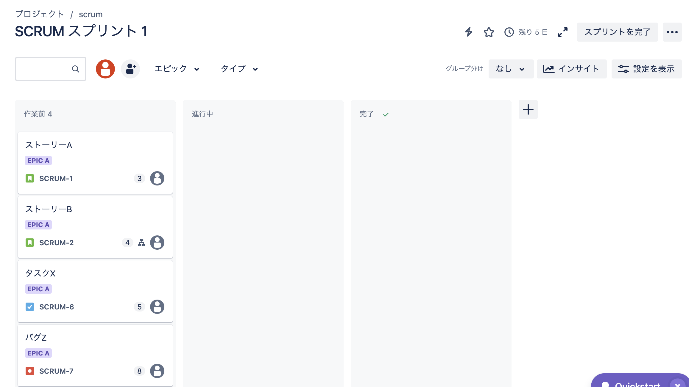
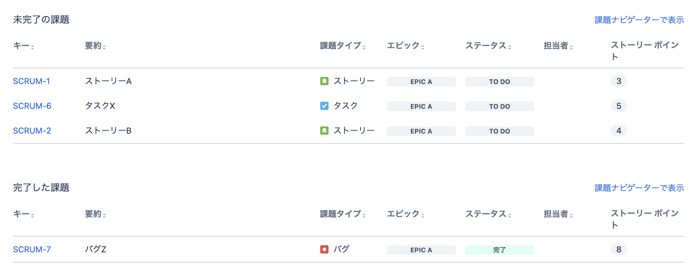

jiraによるタスク管理¶
JIRAについて¶
JIRAはatlassian社が提供しているチケット管理ツールであり、特にアジャイルのためのプロジェクト管理ツール。 Jiraの活用事例 ～課題管理編～で語られているが、色々利用方法があり、自分達にフィットした利用方法を見つけるのが難しいと思う。
Jiraは高機能でやろうと思えば様々なことが実現できる反面、自由度が高く、効果的な使い方に行きつくには時間をかけて試行錯誤をする必要があるように思えます。インターネットで活用事例を探そうにも、なかなか自分にフィットする使い方が見つからないのではないでしょうか。
基本設定¶
jiraの無償版の申し込みをする。jiraのサイトから簡単に無償版の申請ができる。
各PJを作成する時のキーは、タスクやエピック全ての接頭辞になり、目にする機会が多いので適切なものを選択する。
おすすめはPJ名の省略文字など。
課題管理(kanban)¶
kanbanの作成¶
kanbanを利用して、課題管理をしてみよう。Jiraの活用事例 ～課題管理編～を踏襲する形でkanbanを作成する。
最初から、ステータスが「作業前、進行中、完了」と作成されており、レーンに分かれている。

ステータスの追加¶
レーンを事前に設定されたものだけでなく追加したい場合は、右側の「+」から追加でき、自動的にステータスにも追加される。
今回はReadyを追加。

課題の作成¶
kanbanから課題を追加することができる。 追加した課題からは以下ができるようだ
エピックの追加
子課題の追加
課題のリンク
説明の追加
コメント
担当者割り当ての追加

課題の項目の追加¶
設定>プロジェクト設定>課題タイプから、課題タイプごとのテンプレートとして項目自体を追加することができる。

今回はpriorityを追加することで、課題を作成するとpriorityが追加されている
レポート¶
レポート機能を利用すると、タスクの累積フロー図などをみることができる
スケジュール管理¶
前提としてJIRAはAgile開発などに利用されることを想定している管理のため、日にち単位での作業進捗を管理するようなスケジュール管理には向かない。
これはそもそもAgile開発の思想としては、以下の原則を重視しているためである。
提供価値の重視
スケジュールを守ることよりも、提供価値を大きくすることを重視している。
スケジュールが重要ではないということではないが、価値のために変化を受け入れるため、細かなスケジュール管理を劣後している。短期間での反復
細かいスプリントレベルでの開発サイクルを回すため、細かいタスクはスプリントの中で管理を行い、 全体方針としては、生み出される成果物(Epicレベル)を管理する仕組みになっている。チームの自律性
Agileではチームの自立性を高めることが重要視されており、過度な管理をすることは推奨されていない。
上記を踏まえ、成果物を生み出すということを重視したAgile開発の、スケジュールを管理をJIRAを利用して行う。 Jiraの活用事例 ～スケジュール管理編～を参考に設定していく。
タイムライン-Epic-Issueの管理¶
タイムラインから、Epicを追加することができる。Epicは複数の課題をまとめた、ワンセットのタスクや機能単位を指す。 エピックごとに開始と終了を設定することができる。 また、Epicごとに色を設定することができ、Epicが参照されるときは常にその色が設定される。
Epicから、課題を追加することができ、kanban側にIssumeも自動で追加される。
既に作成したIssueをEpicに追加する場合は、Issueの画面からEpicを追加する。
Epic配下にあるIssueが完了すると、Epic全体として、Issueがどのくらい完了しているかを把握することができる。
サブタスクの管理¶
各Issueの画面からサブタスクを切り分けることができる。各タスクから子課題の設定を行う。
サブタスクはタイムラインからは確認することができないが、kanbanの画面を切り替えることでサブタスクの進捗を確認することができる。
【参考】スクラム編¶
スクラムの作成¶
Jiraの活用事例 ～スクラム初心者編～を参考にスクラムのPJを作成していく
スクラムの作成¶
スクラムを選択して、PJを作成する。
バックログ¶
バックログとして、以下の３つの課題を管理することができる
ストーリ：ユーザーに新しい価値を提供する機能単位
タスク：ユーザーには価値を提供しないものの、放置するとベロシティを下げるもの
バグ：リリース後に発覚したバグ
基本的には、ストーリーの開発を進め、バグは優先度に応じて対応、ベロシティの低下が課題になっているときにタスクを見直すようにする。 ストーリー・タスク・バグ全てエピック配下として管理することが可能
ストーリーポイント¶
各課題（ストーリ・タスク・バグ・サブタスク）に対して、ストーリーポイントの見積りを行い、記録する。
注意点として、サブタスクのストーリーポイントを見積もったとしても、親タスクのストーリーポイントは合算地にならず改めて親タスクにポイントを設定する必要がある。
スプリントの開始¶
バックログから、スプリントに課題を追加していき、ストーリーポイントの合算値がベロシティと同程度になったら、スプリントを開始する。
タイムライン¶
スプリントを開始すると、自動でタイムラインにスプリントの情報をマッピングしてくれる。 エピックと課題、Sprintの関係を自動で可視化してくれるので便利。
kanban¶
スプリントの場合、kanbanも全タスクが対象ではなく、スプリントで対象となっている課題たちのみが対象となる。
利用方法としては、タスク管理でもスプリントでも同じで、課題単位やサブタスク単位でkanbanを利用できる。

レポート¶
バーンダウンチャートを利用して、ストーリーポイントの進捗状況や完了済みや未完了の課題を一覧かすることができ、レトロスペクティブの時に便利。 
【参考】チケットの時間管理編¶
スプリントを開始する際には、時間単位での見積もりを行うことが多いと思うが、その時間を管理する方法を紹介する。
Jiraの活用事例 ～チケットの時間管理編～ を参考にして設定する。
事前準備¶
初期設定で、タスクや課題に時間管理のアクションがついていないので、利用する課題タイプには全て付与する

時間での見積もり¶
今回は、サブタスク2つを持つストーリを例にして時間見積りを追加していく。
ストーリーB
サブタスクX
サブタスクY
サブタスクの時間見積もり¶
サブタスクについて時間を見積り、残時間に記入する。サブタスクXに3hをサブタスクYに7hを設定。
ストーリーポイントの際には、親タスクに子タスクの合算ポイントは付与されなかったが、見積もり時間については親タスクにこタスクの合計値が表示される。今回は（3h+7h=10h=1d+2h)
時間の記録¶
サブタスクについて、作業を行った場合、時間の管理に作業時間を見積もる。
見積もり時間内の場合¶
3hの見積もりに対して作業時間を2h記録した場合、自動で残時間を算出してくれる。
サブタスクで記録をしておくと、親タスクにも作業時間を記録しておいてくれる。